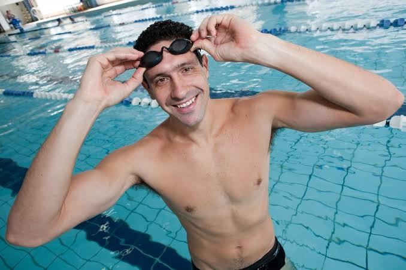

Natação
Atividade que acompanha a história da Nadbem desde a fundação da escola de natação em Ourinhos.
A Academia Nadbem Saúde Integrativa nasceu em Ourinhos em 1992 como escola de natação e hidroginástica. Hoje, reúne diferentes atividades ligadas à saúde, atividade física e condicionamento.
Para quem procura natação em Ourinhos, a Academia Nadbem reúne tradição local e uma história diretamente ligada às atividades aquáticas. A empresa iniciou suas atividades em 1992, com uma escola de natação e hidroginástica na cidade.
Desde então, a Nadbem ampliou sua atuação, mas a natação permanece como parte importante de sua trajetória. As aulas fazem parte de uma proposta voltada à atividade física, ao aprendizado e à qualidade de vida.
Se você está pesquisando onde fazer natação em Ourinhos, quer conhecer uma escola de natação na cidade ou busca informações para começar uma atividade aquática, fale diretamente com a equipe para consultar turmas e disponibilidade.
A hidroginástica também faz parte da origem da Academia Nadbem. A modalidade utiliza o ambiente aquático para a realização de exercícios e integra a história da empresa desde 1992.
Quem procura informações sobre hidroginástica em Ourinhos pode entrar em contato diretamente com a Nadbem para consultar disponibilidade, organização das turmas e demais detalhes.
A Nadbem ampliou suas atividades ao longo dos anos e hoje trabalha com diferentes práticas relacionadas à atividade física, saúde e condicionamento.
Atividade que acompanha a história da Nadbem desde a fundação da escola de natação em Ourinhos.
Modalidade aquática presente na história da Academia Nadbem desde o início das atividades.
Uma das atividades incorporadas à Nadbem durante a expansão de seus serviços.
Modalidade incluída entre as atividades oferecidas pela Academia Nadbem.
Atividades voltadas à prática regular de exercícios e ao acompanhamento da evolução física.
A Academia Nadbem possui parceria com a Metodologia Gustavo Borges.
A metodologia trabalha áreas pedagógicas, eventos, promoções, treinamento de professores e metodologia de aulas.
Segundo as informações fornecidas pela Nadbem, mais de 400 academias brasileiras utilizam essa metodologia.
Para a academia, a parceria está relacionada também à capacitação dos profissionais e ao acompanhamento de práticas e metodologias aplicadas às aulas.


Uma parceria integrada à proposta da Nadbem de manter seus profissionais em processo regular de atualização.
Outro parceiro citado pela Academia Nadbem é o Dr. Cássio Mascarenhas, da Universidade Federal de São Carlos, criador do programa Pró-Saúde aplicado à área de musculação.
O programa possibilita acompanhar o desenvolvimento dos alunos ao longo do tempo utilizando indicadores relacionados à evolução física.
Os dados funcionam como referências de acompanhamento e permitem observar mudanças ao longo dos anos.
A trajetória da Academia Nadbem começou em 1992 e evoluiu junto com sua proposta de oferecer diferentes atividades relacionadas à saúde e ao movimento.
A história começou com a criação de uma escola de natação e hidroginástica na cidade.
Com o passar dos anos, a Nadbem incorporou atividades como musculação personalizada, Cross Hit e outros serviços relacionados à saúde e à atividade física.
A academia conta com profissionais que realizam cursos e treinamentos regularmente, acompanhando novidades relacionadas a modalidades, metodologias e equipamentos.
A trajetória também passou a incluir parcerias como a Metodologia Gustavo Borges e o programa Pró-Saúde.
A Academia Nadbem conta com um sistema fotovoltaico responsável pela geração da energia elétrica utilizada na academia.
O sistema foi instalado em parceria com a Tecfasa, de Bauru, fazendo parte da estrutura atual da empresa.
Tradição local, atividades aquáticas, capacitação profissional, acompanhamento e estrutura fazem parte da história da academia.
Uma trajetória construída em Ourinhos há mais de três décadas.
Natação e hidroginástica fazem parte da origem da Nadbem.
A equipe participa regularmente de cursos e treinamentos.
Parceria ligada também à metodologia de aulas e capacitação.
Indicadores como força muscular, composição corporal e VO2 máximo.
Sistema instalado para geração da energia utilizada pela academia.
Localizada no Jardim Paulista, na R. Júlio Mori, 420.
A Academia Nadbem Saúde Integrativa está localizada no Jardim Paulista, em Ourinhos, São Paulo.
Se você procura onde fazer natação em Ourinhos, a Nadbem fica no bairro Jardim Paulista e pode ser acessada pela R. Júlio Mori.
Consulte abaixo os horários gerais de funcionamento informados pela academia.
Os horários específicos das aulas e das turmas não foram informados nesta página. Para saber a disponibilidade da natação ou de outras atividades, entre em contato pelo WhatsApp.
Informações rápidas sobre natação, localização, atividades, horários e contato.
Fale diretamente com a Academia Nadbem para consultar turmas, disponibilidade e demais informações sobre as aulas.